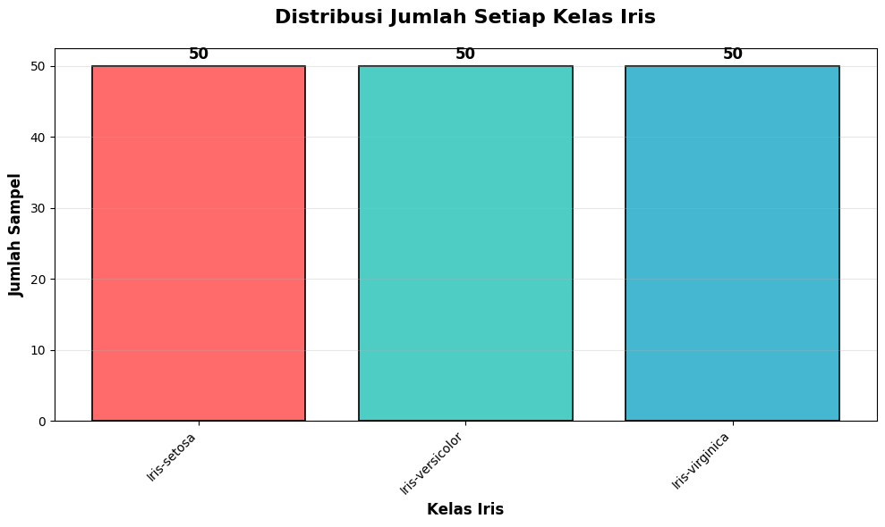
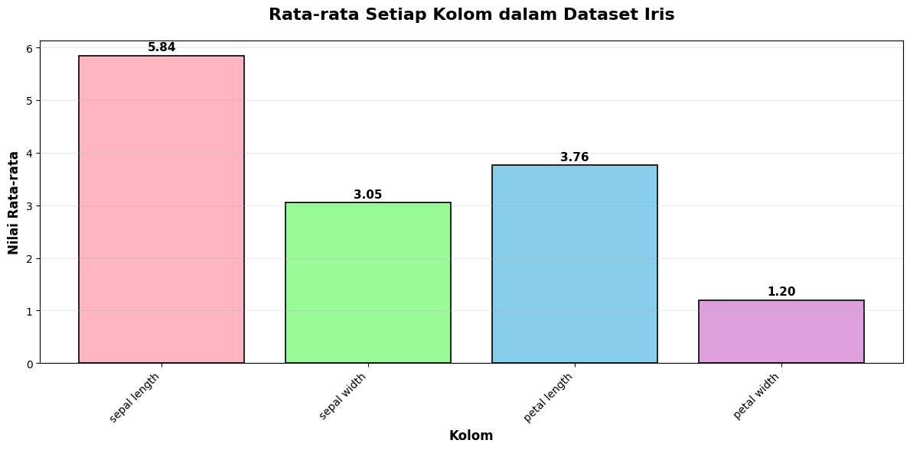
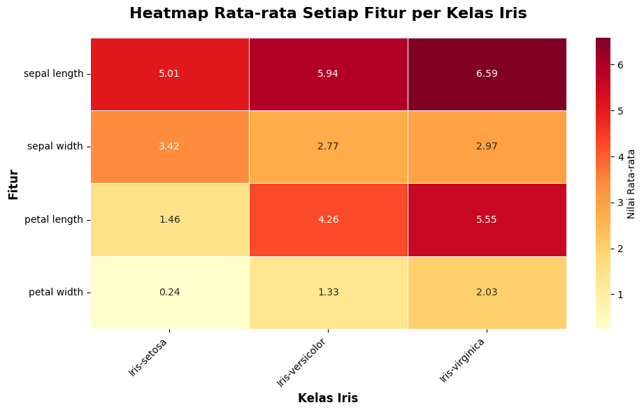

Eksplorasi Data#
Notebook ini berisi analisis eksplorasi data untuk dataset Iris yang mencakup:
Nilai minimum dan maksimum dari setiap kolom
Rata-rata dari setiap kolom
Jumlah setiap kelas yang ditampilkan dalam grafik batang
# Import library yang diperlukan
import pandas as pd
import numpy as np
import matplotlib.pyplot as plt
import seaborn as sns
# Set style untuk visualisasi
plt.style.use('default')
sns.set_palette("husl")
# Load data dari file CSV
# Menggunakan delimiter ';' dan mengganti koma dengan titik untuk decimal
df = pd.read_csv('data_iris.csv', delimiter=';')
# Tampilkan informasi dasar tentang dataset
print("Informasi Dataset:")
print(f"Jumlah baris: {len(df)}")
print(f"Jumlah kolom: {len(df.columns)}")
print("\nNama kolom:")
print(df.columns.tolist())
Informasi Dataset:
Jumlah baris: 150
Jumlah kolom: 6
Nama kolom:
['id', 'Class', 'sepal length', 'sepal width', 'petal length', 'petal width']
# Tampilkan 5 baris pertama data
print("5 Baris Pertama Data:")
df.head()
5 Baris Pertama Data:
| id | Class | sepal length | sepal width | petal length | petal width | |
|---|---|---|---|---|---|---|
| 0 | 1 | Iris-setosa | 5,1 | 3,5 | 1,4 | 0,2 |
| 1 | 2 | Iris-setosa | 4,9 | 3 | 1,4 | 0,2 |
| 2 | 3 | Iris-setosa | 4,7 | 3,2 | 1,3 | 0,2 |
| 3 | 4 | Iris-setosa | 4,6 | 3,1 | 1,5 | 0,2 |
| 4 | 5 | Iris-setosa | 5 | 3,6 | 1,4 | 0,2 |
# Konversi kolom numerik yang menggunakan koma sebagai decimal separator
numeric_columns = ['sepal length', 'sepal width', 'petal length', 'petal width']
for col in numeric_columns:
if col in df.columns:
# Konversi koma ke titik untuk decimal
df[col] = df[col].astype(str).str.replace(',', '.').astype(float)
print("Data setelah konversi:")
df.head()
Data setelah konversi:
| id | Class | sepal length | sepal width | petal length | petal width | |
|---|---|---|---|---|---|---|
| 0 | 1 | Iris-setosa | 5.1 | 3.5 | 1.4 | 0.2 |
| 1 | 2 | Iris-setosa | 4.9 | 3.0 | 1.4 | 0.2 |
| 2 | 3 | Iris-setosa | 4.7 | 3.2 | 1.3 | 0.2 |
| 3 | 4 | Iris-setosa | 4.6 | 3.1 | 1.5 | 0.2 |
| 4 | 5 | Iris-setosa | 5.0 | 3.6 | 1.4 | 0.2 |
Analisis Jenis Variabel#
Bagian ini menganalisis klasifikasi jenis variabel dalam dataset berdasarkan teori statistik.
# Analisis jenis variabel berdasarkan klasifikasi
print("=== KLASIFIKASI JENIS VARIABEL ===")
print("\n Teori Jenis Variabel:")
print("• Quantitative (Numerik): Nilai angka, bisa dihitung")
print("• Qualitative (Kategorikal/Faktor): Klasifikasi atau kategori")
print("• Discrete: Nilai terpisah (tanpa nilai antara)")
print("• Continuous: Nilai kontinu (bisa pecahan)")
print("\n" + "="*60)
print(" ANALISIS VARIABEL DATASET IRIS")
print("="*60)
# Analisis setiap variabel
variable_analysis = {
'sepal length': {
'tipe_data': str(df['sepal length'].dtype),
'jenis_variabel': 'Quantitative (Numerik)',
'sub_kategori': 'Continuous',
'deskripsi': 'Nilai kontinu, bisa berupa pecahan',
'contoh_nilai': df['sepal length'].head(3).tolist(),
'rentang': f"{df['sepal length'].min():.1f} - {df['sepal length'].max():.1f} cm"
},
'sepal width': {
'tipe_data': str(df['sepal width'].dtype),
'jenis_variabel': 'Quantitative (Numerik)',
'sub_kategori': 'Continuous',
'deskripsi': 'Nilai kontinu, bisa berupa pecahan',
'contoh_nilai': df['sepal width'].head(3).tolist(),
'rentang': f"{df['sepal width'].min():.1f} - {df['sepal width'].max():.1f} cm"
},
'petal length': {
'tipe_data': str(df['petal length'].dtype),
'jenis_variabel': 'Quantitative (Numerik)',
'sub_kategori': 'Continuous',
'deskripsi': 'Nilai kontinu, bisa berupa pecahan',
'contoh_nilai': df['petal length'].head(3).tolist(),
'rentang': f"{df['petal length'].min():.1f} - {df['petal length'].max():.1f} cm"
},
'petal width': {
'tipe_data': str(df['petal width'].dtype),
'jenis_variabel': 'Quantitative (Numerik)',
'sub_kategori': 'Continuous',
'deskripsi': 'Nilai kontinu, bisa berupa pecahan',
'contoh_nilai': df['petal width'].head(3).tolist(),
'rentang': f"{df['petal width'].min():.1f} - {df['petal width'].max():.1f} cm"
},
'Class': {
'tipe_data': str(df['Class'].dtype),
'jenis_variabel': 'Qualitative (Kategorikal)',
'sub_kategori': 'Discrete (Nominal)',
'deskripsi': 'Kategori nama spesies, tidak ada urutan',
'contoh_nilai': df['Class'].unique().tolist(),
'rentang': f"{df['Class'].nunique()} kategori"
}
}
# Tampilkan analisis setiap variabel
for i, (var_name, analysis) in enumerate(variable_analysis.items(), 1):
print(f"\n{i}. VARIABEL: {var_name.upper()}")
print(f" • Tipe Data: {analysis['tipe_data']}")
print(f" • Jenis Variabel: {analysis['jenis_variabel']}")
print(f" • Sub-kategori: {analysis['sub_kategori']}")
print(f" • Deskripsi: {analysis['deskripsi']}")
print(f" • Contoh nilai: {analysis['contoh_nilai']}")
print(f" • Rentang: {analysis['rentang']}")
print(" " + "-"*40)
=== KLASIFIKASI JENIS VARIABEL ===
Teori Jenis Variabel:
• Quantitative (Numerik): Nilai angka, bisa dihitung
• Qualitative (Kategorikal/Faktor): Klasifikasi atau kategori
• Discrete: Nilai terpisah (tanpa nilai antara)
• Continuous: Nilai kontinu (bisa pecahan)
============================================================
ANALISIS VARIABEL DATASET IRIS
============================================================
1. VARIABEL: SEPAL LENGTH
• Tipe Data: float64
• Jenis Variabel: Quantitative (Numerik)
• Sub-kategori: Continuous
• Deskripsi: Nilai kontinu, bisa berupa pecahan
• Contoh nilai: [5.1, 4.9, 4.7]
• Rentang: 4.3 - 7.9 cm
----------------------------------------
2. VARIABEL: SEPAL WIDTH
• Tipe Data: float64
• Jenis Variabel: Quantitative (Numerik)
• Sub-kategori: Continuous
• Deskripsi: Nilai kontinu, bisa berupa pecahan
• Contoh nilai: [3.5, 3.0, 3.2]
• Rentang: 2.0 - 4.4 cm
----------------------------------------
3. VARIABEL: PETAL LENGTH
• Tipe Data: float64
• Jenis Variabel: Quantitative (Numerik)
• Sub-kategori: Continuous
• Deskripsi: Nilai kontinu, bisa berupa pecahan
• Contoh nilai: [1.4, 1.4, 1.3]
• Rentang: 1.0 - 6.9 cm
----------------------------------------
4. VARIABEL: PETAL WIDTH
• Tipe Data: float64
• Jenis Variabel: Quantitative (Numerik)
• Sub-kategori: Continuous
• Deskripsi: Nilai kontinu, bisa berupa pecahan
• Contoh nilai: [0.2, 0.2, 0.2]
• Rentang: 0.1 - 2.5 cm
----------------------------------------
5. VARIABEL: CLASS
• Tipe Data: object
• Jenis Variabel: Qualitative (Kategorikal)
• Sub-kategori: Discrete (Nominal)
• Deskripsi: Kategori nama spesies, tidak ada urutan
• Contoh nilai: ['Iris-setosa', 'Iris-versicolor', 'Iris-virginica']
• Rentang: 3 kategori
----------------------------------------
1. Nilai Minimum dan Maksimum dari Setiap Kolom#
# Hitung min dan max untuk setiap kolom numerik
print("NILAI MINIMUM DAN MAKSIMUM SETIAP KOLOM")
print("="*50)
for col in numeric_columns:
if col in df.columns:
min_val = df[col].min()
max_val = df[col].max()
print(f"{col:15}: Min = {min_val:.2f}, Max = {max_val:.2f}")
# Buat DataFrame untuk visualisasi yang lebih rapi
min_max_df = pd.DataFrame({
'Kolom': numeric_columns,
'Minimum': [df[col].min() for col in numeric_columns if col in df.columns],
'Maksimum': [df[col].max() for col in numeric_columns if col in df.columns]
})
print("\nTabel Min-Max:")
min_max_df
NILAI MINIMUM DAN MAKSIMUM SETIAP KOLOM
==================================================
sepal length : Min = 4.30, Max = 7.90
sepal width : Min = 2.00, Max = 4.40
petal length : Min = 1.00, Max = 6.90
petal width : Min = 0.10, Max = 2.50
Tabel Min-Max:
| Kolom | Minimum | Maksimum | |
|---|---|---|---|
| 0 | sepal length | 4.3 | 7.9 |
| 1 | sepal width | 2.0 | 4.4 |
| 2 | petal length | 1.0 | 6.9 |
| 3 | petal width | 0.1 | 2.5 |
2. Rata-rata dari Setiap Kolom#
# Hitung rata-rata untuk setiap kolom numerik
print("RATA-RATA SETIAP KOLOM")
print("="*30)
for col in numeric_columns:
if col in df.columns:
mean_val = df[col].mean()
print(f"{col:15}: {mean_val:.2f}")
# Buat DataFrame untuk rata-rata
mean_df = pd.DataFrame({
'Kolom': numeric_columns,
'Rata-rata': [df[col].mean() for col in numeric_columns if col in df.columns]
})
print("\nTabel Rata-rata:")
mean_df
RATA-RATA SETIAP KOLOM
==============================
sepal length : 5.84
sepal width : 3.05
petal length : 3.76
petal width : 1.20
Tabel Rata-rata:
| Kolom | Rata-rata | |
|---|---|---|
| 0 | sepal length | 5.843333 |
| 1 | sepal width | 3.054000 |
| 2 | petal length | 3.758667 |
| 3 | petal width | 1.198667 |
3. Rata-rata per Kelas#
# Hitung rata-rata setiap kolom berdasarkan kelas
print("RATA-RATA SETIAP KOLOM BERDASARKAN KELAS")
print("="*45)
class_means = df.groupby('Class')[numeric_columns].mean()
print(class_means.round(2))
RATA-RATA SETIAP KOLOM BERDASARKAN KELAS
=============================================
sepal length sepal width petal length petal width
Class
Iris-setosa 5.01 3.42 1.46 0.24
Iris-versicolor 5.94 2.77 4.26 1.33
Iris-virginica 6.59 2.97 5.55 2.03
4. Jumlah Setiap Kelas (Grafik Batang)#
# Hitung jumlah setiap kelas
class_counts = df['Class'].value_counts()
print("JUMLAH SETIAP KELAS:")
print("="*20)
for class_name, count in class_counts.items():
print(f"{class_name}: {count} sampel")
print(f"\nTotal sampel: {len(df)}")
JUMLAH SETIAP KELAS:
====================
Iris-setosa: 50 sampel
Iris-versicolor: 50 sampel
Iris-virginica: 50 sampel
Total sampel: 150
# Buat grafik batang untuk jumlah setiap kelas
plt.figure(figsize=(10, 6))
# Grafik batang dengan warna yang berbeda
bars = plt.bar(class_counts.index, class_counts.values,
color=['#FF6B6B', '#4ECDC4', '#45B7D1'],
edgecolor='black', linewidth=1.2)
# Tambahkan nilai di atas setiap batang
for bar, value in zip(bars, class_counts.values):
plt.text(bar.get_x() + bar.get_width()/2, bar.get_height() + 0.5,
str(value), ha='center', va='bottom', fontsize=12, fontweight='bold')
plt.title('Distribusi Jumlah Setiap Kelas Iris', fontsize=16, fontweight='bold', pad=20)
plt.xlabel('Kelas Iris', fontsize=12, fontweight='bold')
plt.ylabel('Jumlah Sampel', fontsize=12, fontweight='bold')
plt.xticks(rotation=45, ha='right')
plt.grid(axis='y', alpha=0.3)
plt.tight_layout()
plt.show()

5. Visualisasi Tambahan: Perbandingan Rata-rata per Kolom#
# Grafik batang untuk rata-rata setiap kolom
plt.figure(figsize=(12, 6))
means = [df[col].mean() for col in numeric_columns if col in df.columns]
bars = plt.bar(range(len(numeric_columns)), means,
color=['#FFB6C1', '#98FB98', '#87CEEB', '#DDA0DD'],
edgecolor='black', linewidth=1.2)
# Tambahkan nilai di atas setiap batang
for bar, value in zip(bars, means):
plt.text(bar.get_x() + bar.get_width()/2, bar.get_height() + 0.05,
f'{value:.2f}', ha='center', va='bottom', fontsize=11, fontweight='bold')
plt.title('Rata-rata Setiap Kolom dalam Dataset Iris', fontsize=16, fontweight='bold', pad=20)
plt.xlabel('Kolom', fontsize=12, fontweight='bold')
plt.ylabel('Nilai Rata-rata', fontsize=12, fontweight='bold')
plt.xticks(range(len(numeric_columns)), numeric_columns, rotation=45, ha='right')
plt.grid(axis='y', alpha=0.3)
plt.tight_layout()
plt.show()

6. Heatmap Rata-rata per Kelas#
# Buat heatmap untuk rata-rata setiap fitur per kelas
plt.figure(figsize=(10, 6))
sns.heatmap(class_means.T, annot=True, fmt='.2f', cmap='YlOrRd',
cbar_kws={'label': 'Nilai Rata-rata'},
linewidths=0.5)
plt.title('Heatmap Rata-rata Setiap Fitur per Kelas Iris',
fontsize=16, fontweight='bold', pad=20)
plt.xlabel('Kelas Iris', fontsize=12, fontweight='bold')
plt.ylabel('Fitur', fontsize=12, fontweight='bold')
plt.xticks(rotation=45, ha='right')
plt.yticks(rotation=0)
plt.tight_layout()
plt.show()

7. Ringkasan Hasil Eksplorasi#
print("RINGKASAN HASIL EKSPLORASI DATA IRIS")
print("="*40)
print(f"Total sampel: {len(df)}")
print(f"Jumlah fitur numerik: {len(numeric_columns)}")
print(f"Jumlah kelas: {df['Class'].nunique()}")
print(f"Kelas: {', '.join(df['Class'].unique())}")
print("\nDistribusi kelas:")
for class_name, count in class_counts.items():
percentage = (count / len(df)) * 100
print(f" {class_name}: {count} sampel ({percentage:.1f}%)")
print("\nRentang nilai setiap fitur:")
for col in numeric_columns:
if col in df.columns:
min_val = df[col].min()
max_val = df[col].max()
range_val = max_val - min_val
print(f" {col}: {min_val:.2f} - {max_val:.2f} (rentang: {range_val:.2f})")
RINGKASAN HASIL EKSPLORASI DATA IRIS
========================================
Total sampel: 150
Jumlah fitur numerik: 4
Jumlah kelas: 3
Kelas: Iris-setosa, Iris-versicolor, Iris-virginica
Distribusi kelas:
Iris-setosa: 50 sampel (33.3%)
Iris-versicolor: 50 sampel (33.3%)
Iris-virginica: 50 sampel (33.3%)
Rentang nilai setiap fitur:
sepal length: 4.30 - 7.90 (rentang: 3.60)
sepal width: 2.00 - 4.40 (rentang: 2.40)
petal length: 1.00 - 6.90 (rentang: 5.90)
petal width: 0.10 - 2.50 (rentang: 2.40)